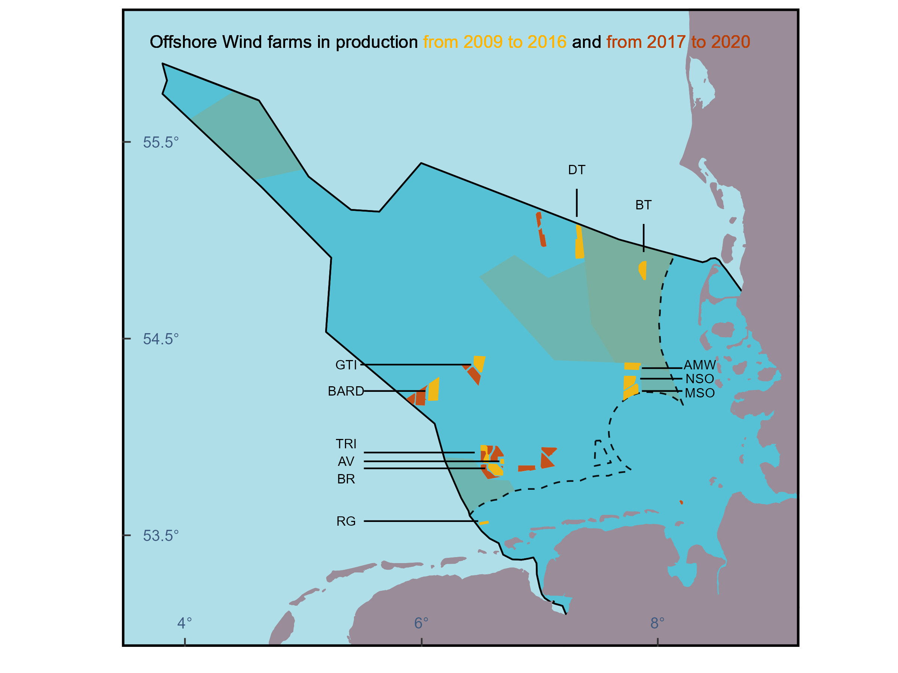

library(ggplot2)
library(tidyverse)Offshore Wind Farms
R
ggplot2
English
Y2025
This blog post demonstrates how to visualize offshore wind farm data in the German North Sea using R. It covers data download, exploration, mapping with ggplot2, and calculating areas developed before 2016.
Intro
An Offshore Wind Farm (OWF) is defined as a group of wind turbines placed in the ocean to generate electricity using the power of the wind.
- Wind turbines are installed on foundations anchored to the seabed (or floating, in deeper waters).
- Blades spin when the wind blows, turning a generator.
- The electricity generated is sent back to land through underwater power cables.
- Offshore wind farms have high upfront costs and engineering complexity, produce visual and noise problems, and might have an impact on marine ecosystems and birds.

Alpha Ventus Windmills
Source: Wikipedia
Data
EMODnet is a European initiative that provides free, open-access data on the marine environment of Europe. It’s designed to support marine research, policy-making, and sustainable ocean development by making reliable marine data easily available.
To download the original data go to EMODnet. Select human activities.
Packages
To visualize the data we first need to load some packages.
In the package GermanNorthSea, the information provided by EMODnet and GeoSeaPortal is included for easy access. If you don’t have the package you can install it by using devtools::install_github(“MiriamLL/GermanNorthSea”).
library(GermanNorthSea)Visualize
Wind farms
Load the data from the package or from your file.
OWF_EMODnet<-GermanNorthSea::OWF_EMODnetUse ggplot to visualize the OWF.
ggplot(OWF_EMODnet)+
geom_sf(data = OWF_EMODnet, colour = NA,fill= "black",alpha=1, size=1,linetype="dashed")Add other layers to have a reference. The additional shapes are also part of the package GermanNorthSea.
ggplot(OWF_EMODnet) + # Gives CRS
# Fill colors
geom_sf(data = GermanNorthSea::German_EEZ, colour = "black", fill= '#56C1D5', lwd = 0.5)+
geom_sf(data = GermanNorthSea::German_natura, colour = 'transparent', fill= '#84a98c', alpha=0.5,lwd = 0.5)+
geom_sf(data = GermanNorthSea::German_SCA, colour = 'transparent', fill= '#84a98c', alpha=0.5,lwd = 0.5)+
geom_sf(data = GermanNorthSea::German_land, colour = '#9a8c98', fill = '#9a8c98')+
# Line colors
geom_sf(data = GermanNorthSea::German_EEZ, colour = "black", fill= NA, lwd = 0.5)+
geom_sf(data = GermanNorthSea::German_coast, colour = "black", fill= NA,alpha=0.9, lwd = 0.5,linetype="dashed")+
geom_sf(data = GermanNorthSea::German_land, colour = '#9a8c98', fill = '#9a8c98')+
# OWF
geom_sf(data = OWF_EMODnet, colour = NA,fill= "#bb3e03",alpha=0.9, size=1,linetype="dashed")+
coord_sf(xlim = c(3900000,4250000), ylim = c(3350000,3680000),
label_axes = list(left = "N", bottom = 'E'))Status
In the context of Offshore Wind Farms (OWF), the terms “Production”, “Approved”, and “Planned” refer to the development status or stage of a wind farm project.
- Production is when the wind farm is fully built and actively generating electricity;
- Approved is when the wind farm project has received all the necessary legal and environmental permits from authorities but construction has not yet started; and
- Planned is when the wind farm is in the early stages of development, often proposed or under review, but not yet approved.
unique(OWF_EMODnet$STATUS)To only use active OWF the best is to filter using the status and selecting Production.
OWF_Production<-OWF_EMODnet%>%
filter(STATUS == 'Production')We can also filter the information by using year. Here, we can see that data includes OWF from 2009 to 2020.
unique(OWF_Production$YEAR)Here, lets separate those OWF before 2016 from the ones after.
OWF_Before2016<-OWF_Production %>%
filter(YEAR <= 2016)OWF_After2016<-OWF_Production %>%
filter(YEAR > 2016)Plot using different colors for OWF before 2016 and after 2016.
OWF_1plot<-ggplot(OWF_EMODnet) + # Gives CRS
# Fill colors
geom_sf(data = GermanNorthSea::German_EEZ, colour = "black", fill= '#56C1D5', lwd = 0.5)+
geom_sf(data = GermanNorthSea::German_natura, colour = 'transparent', fill= '#84a98c', alpha=0.5,lwd = 0.5)+
geom_sf(data = GermanNorthSea::German_SCA, colour = 'transparent', fill= '#84a98c', alpha=0.5,lwd = 0.5)+
geom_sf(data = GermanNorthSea::German_land, colour = '#9a8c98', fill = '#9a8c98')+
# Line colors
geom_sf(data = GermanNorthSea::German_EEZ, colour = "black", fill= NA, lwd = 0.5)+
geom_sf(data = GermanNorthSea::German_coast, colour = "black", fill= NA,alpha=0.9, lwd = 0.5,linetype="dashed")+
geom_sf(data = GermanNorthSea::German_land, colour = '#9a8c98', fill = '#9a8c98')+
## OWF
geom_sf(data = OWF_After2016, colour = NA,fill= "#bb3e03",alpha=0.9, size=1,linetype="dashed")+
geom_sf(data = OWF_Before2016, colour = "#ffb703",fill= "#ffb703",alpha=0.9, size=1)+
coord_sf(xlim = c(3900000,4250000), ylim = c(3350000,3680000),
label_axes = list(left = "N", bottom = 'E'))
OWF_1plotNames
There is an option using ggrepel, but here I manually include names of the OWF using annotation.
First, create a data frame with the coordinates and the segment.
Labels<-data.frame(text_x=c(4010000,4010000,4141000,4179000,4211000,4211000,4211000,4010000,4010000,4010000,4010000),
text_y= c(3479000,3494000,3605000,3585000,3494000,3486000,3478000,3449000,3439000,3429000,3405000),
text_label=c("BARD","GTI","DT","BT","AMW","NSO","MSO","TRI","AV","BR","RG"),
segment_xstart=c(4020000,4018000,4141000,4179000,4178000,4177000,4178000,4020000,4020000,4020000,4020000),
segment_xend=c(4055000,4081000,4141000,4179000,4201000,4201000,4201000,4083000,4097000,4089000,4085000),
segment_ystart=c(3479000,3494000,3578000,3558000,3492000,3486000,3479000,3444000,3439000,3435000,3405000),
segment_yend=c(3479000,3494000,3594000,3574000,3492000,3486000,3479000,3444000,3439000,3435000,3405000)
)Then add it one by one to the plot. You can skip this step if you dont need the names.
OWF_2plot<-OWF_1plot +
#BARD
annotate("text", x = Labels$text_x[1], y = Labels$text_y[1], label = Labels$text_label[1],size=3)+
annotate("segment", x = Labels$segment_xstart[1], xend = Labels$segment_xend[1],
y = Labels$segment_ystart[1], yend = Labels$segment_yend[1],colour = "black")+
#GTI
annotate("text", x = Labels$text_x[2], y = Labels$text_y[2], label = Labels$text_label[2],size=3)+
annotate("segment", x = Labels$segment_xstart[2], xend = Labels$segment_xend[2],
y = Labels$segment_ystart[2], yend = Labels$segment_yend[2],colour = "black")+
#Dan Tysk
annotate("text", x = Labels$text_x[3], y = Labels$text_y[3], label = Labels$text_label[3],size=3)+
annotate("segment", x = Labels$segment_xstart[3], xend = Labels$segment_xend[3],
y = Labels$segment_ystart[3], yend = Labels$segment_yend[3],colour = "black")+
#Butendiek
annotate("text", x = Labels$text_x[4], y = Labels$text_y[4], label = Labels$text_label[4],size=3)+
annotate("segment", x = Labels$segment_xstart[4], xend = Labels$segment_xend[4],
y = Labels$segment_ystart[4], yend = Labels$segment_yend[4],colour = "black")+
#Amrum bank west
annotate("text", x = Labels$text_x[5], y = Labels$text_y[5], label = Labels$text_label[5],size=3)+
annotate("segment", x = Labels$segment_xstart[5], xend = Labels$segment_xend[5],
y = Labels$segment_ystart[5], yend = Labels$segment_yend[5],colour = "black")+
# NSO
annotate("text", x = Labels$text_x[6], y = Labels$text_y[6], label = Labels$text_label[6],size=3)+
annotate("segment", x = Labels$segment_xstart[6], xend = Labels$segment_xend[6],
y = Labels$segment_ystart[6], yend = Labels$segment_yend[6],colour = "black")+
# MSO
annotate("text", x = Labels$text_x[7], y = Labels$text_y[7], label = Labels$text_label[7],size=3)+
annotate("segment", x = Labels$segment_xstart[7], xend = Labels$segment_xend[7],
y = Labels$segment_ystart[7], yend = Labels$segment_yend[7],colour = "black")+
# TRI
annotate("text", x = Labels$text_x[8], y = Labels$text_y[8], label = Labels$text_label[8],size=3)+
annotate("segment", x = Labels$segment_xstart[8], xend = Labels$segment_xend[8],
y = Labels$segment_ystart[8], yend = Labels$segment_yend[8],colour = "black")+
# AV
annotate("text", x = Labels$text_x[9], y = Labels$text_y[9], label = Labels$text_label[9],size=3)+
annotate("segment", x = Labels$segment_xstart[9], xend = Labels$segment_xend[9],
y = Labels$segment_ystart[9], yend = Labels$segment_yend[9],colour = "black")+
# BR
annotate("text", x = Labels$text_x[10], y = Labels$text_y[10], label = Labels$text_label[10],size=3)+
annotate("segment", x = Labels$segment_xstart[10], xend = Labels$segment_xend[10],
y = Labels$segment_ystart[10], yend = Labels$segment_yend[10],colour = "black")+
# RG
annotate("text", x = Labels$text_x[11], y = Labels$text_y[11], label = Labels$text_label[11],size=3)+
annotate("segment", x = Labels$segment_xstart[11], xend = Labels$segment_xend[11],
y = Labels$segment_ystart[11], yend = Labels$segment_yend[11],colour = "black")+
NULL
OWF_2plotTheme
To reduce noise from the grid, the background colors and the labels, give elements in the theme().
OWF_3plot<-OWF_2plot +
scale_x_continuous(breaks = c(4,6,8),labels = function(x) paste0(x, '\u00B0')) +
scale_y_continuous(breaks = c(53.5,54.5,55.5),labels = function(x) paste0(x, '\u00B0')) +
theme(
panel.grid.major = element_blank(),
panel.grid.minor = element_blank(),
panel.background = element_rect(fill = '#AFDEE8'),
panel.border = element_rect(colour = "black", fill=NA, size=1.5),
axis.text.x = element_text(size=10,vjust = 12,color='#3d5a80'),
axis.text.y = element_text(color='#3d5a80',size=10,margin = margin(0,-1.30,0,1, unit = 'cm')),
axis.title = element_blank(),
axis.ticks.length=unit(-0.20, "cm"),
legend.position='none',
legend.spacing.y = unit(0.05, 'cm'),
legend.text=element_text(size=10),
legend.background = element_rect(fill='transparent',colour ="transparent"),
legend.box.background = element_rect(fill='transparent',colour ="transparent"),
legend.key = element_rect(fill = "transparent", colour = "transparent")
)+
NULL
OWF_3plotTitle
Using the package ggtext, we can add a text with different colors.
library(ggtext)OWF_3plot +
geom_richtext(aes(x = 3895000, y = 3669000,
label = "Offshore Wind farms in production
<span style='color:#ffb400'>from 2009 to 2016</span>
and
<span style='color:#bb3e03'>from 2017 to 2020</span>"),
size=4,
fill = NA,
label.color = NA, # remove background and outline
hjust = 0,
vjust= 0,
inherit.aes = TRUE
)+
NULL
Some calculations
Globally, human activities at sea are becoming more intense and diverse, and the German North Sea is no exception (Emeis et al., 2015). Offshore wind farms are an emerging concern, known to have various negative impacts on marine mammals (Dähne et al., 2013; Kastelein et al., 2016; Brandt et al., 2018) as well as on birds (Drewitt and Langston, 2006; Dierschke et al., 2016; Garthe et al., 2023).
Before 2016, from 2009 to 2016 there was a total area covered of: 368.6957
sum(OWF_Before2016$AREA_SQKM)After 2016, from 2017 to 2020, the area covered was: 374.8699
sum(OWF_After2016$AREA_SQKM)In just four years, more area was developed for offshore wind farms than in the whole seven years before.
(sum(OWF_After2016$AREA_SQKM)*100)/
(sum(OWF_Before2016$AREA_SQKM,OWF_After2016$AREA_SQKM))Additional information
Alternative data sources
GeoSeaPortal is a platform that gives people access to maps and data about Germany’s seas and coasts. It brings together information from different sources into one system, making it easier to find, view, and use the data. To download the original data go to GeoSeaPortal. The zip contains several shapefiles including ‘OffshoreWindEnergy’
OSPAR also makes shapefiles easily accesible
References:
{kind=link}
Publications:
Brandt, M. J., Dragon, A. C., Diederichs, A., Bellmann, M. A., Wahl, V., Piper, W., Nabe-Nielsen, J. and Nehls, G. 2018. Disturbance of harbour porpoises during construction of the first seven offshore wind farms in Germany. – Mar. Ecol. Prog. Ser. 596: 213–232. Link
Dähne, M., Gilles, A., Lucke, K., Peschko, V., Adler, S., Krügel, K., Sundermeyer, J. and Siebert, U. 2013. Effects of pile-driving on harbour porpoises (Phocoena phocoena) at the first offshore wind farm in Germany. – Environ. Res. Lett. Link.
Dierschke, V., Furness, R. W. and Garthe, S. 2016. Seabirds and offshore wind farms in European waters: Avoidance and attraction. – Biol. Conserv. 202: 59–68. Link
Drewitt, A. L. and Langston, R. H. W. 2006. Assessing the impacts of wind farms on birds. – Ibis 148: 29–42. Link
Emeis, K. C., van Beusekom, J., Callies, U., Ebinghaus, R., Kannen, A., Kraus, G., Kröncke, I., Lenhart, H., Lorkowski, I., Matthias, V., Möllmann, C., Pätsch, J., Scharfe, M., Thomas, H., Weisse, R. and Zorita, E. 2015. The North Sea - A shelf sea in the Anthropocene. – J. Mar. Syst. 141: 18–33. Link
Garthe, S., Schwemmer, H., Peschko, V., Markones, N., Müller, S., Schwemmer, P. and Mercker, M. 2023. Large-scale effects of offshore wind farms on seabirds of high conservation concern. – Sci. Rep. 13: 4779. Link
Kastelein, R. A., Helder-Hoek, L., Covi, J. and Gransier, R. 2016. Pile driving playback sounds and temporary threshold shift in harbor porpoises (Phocoena phocoena): Effect of exposure duration . – J. Acoust. Soc. Am. 139: 2842–2851. Link